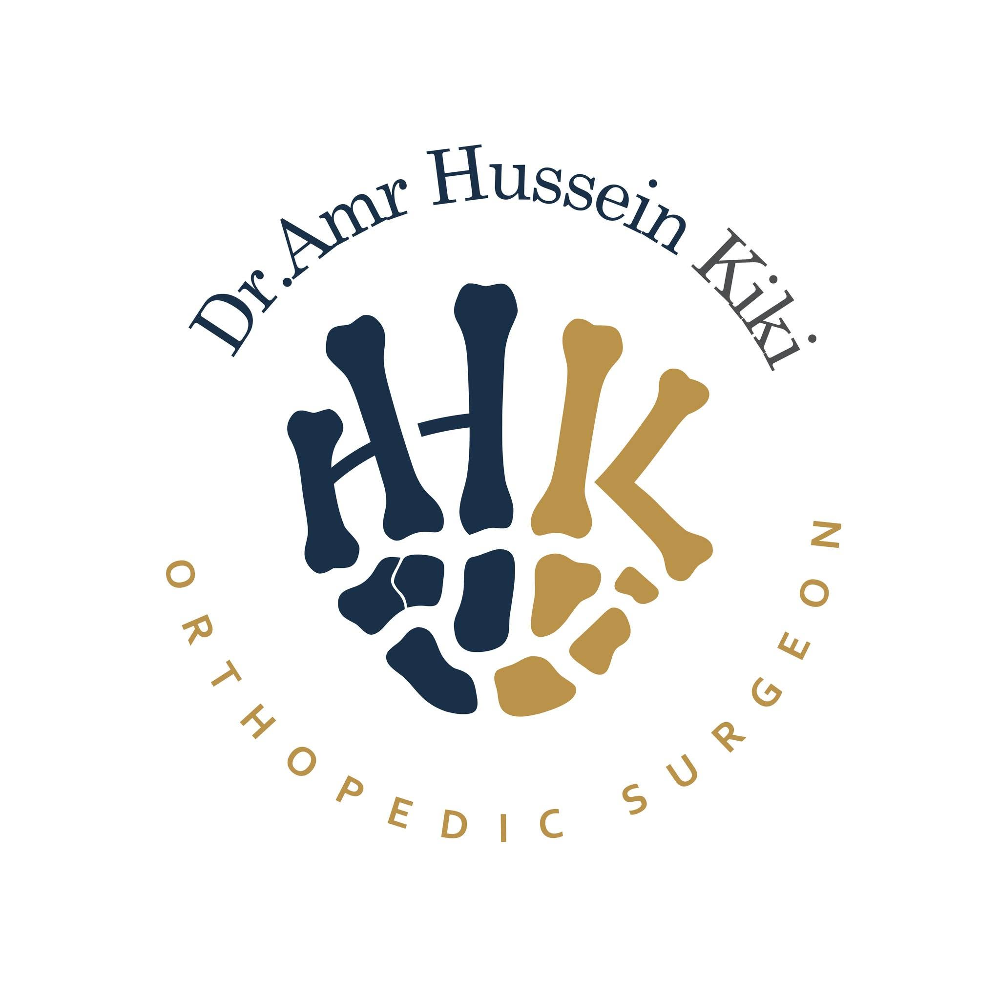
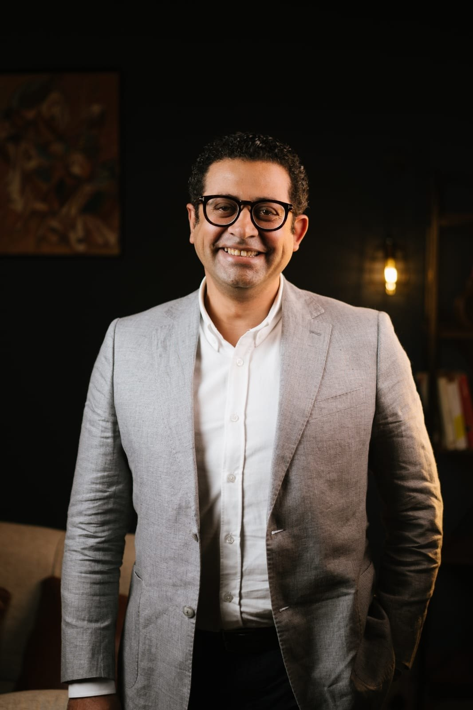

استشاري جراحات العظام و الكسور و الإصابات
استشاري جراحات اليد و الرسغ و الكوع و الكتف و جراحات و مناظير المفاصل
زميل جامعة آخين - ألمانيا
زميل مستشفيات هليوس بيرلاخ - ميونيخ - المانيا

استشاري جراحات العظام و الكسور و الإصابات، بخبرة واسعة في التعامل مع مختلف الحالات الحرجة.
استشاري جراحات اليد و الرسغ و الكوع و الكتف و جراحات و مناظير المفاصل.
زميل جامعة آخين - ألمانيا، وزميل مستشفيات هليوس بيرلاخ - ميونيخ - ألمانيا.
مريض متعافي
عملية ناجحة
رعاية واهتمام (%)
٤٨ شارع عبد السلام عارف، سابا باشا عالترام، أمام محطة ترام سابا باشا.